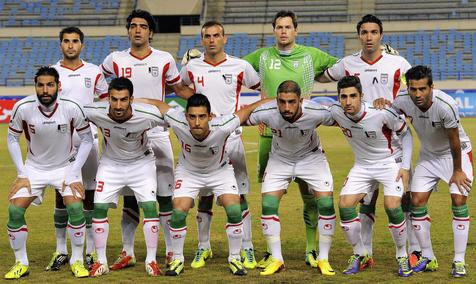

COPAS QUE JÁ PARTICIPOU:
A seleção iraniana participou pela primeira vez da Copa do Mundo em 1978. Participou nas Copas de (1978, 1998, 2006, 2014 e 2018). Em 2022 Fará sua 6° participação na edição que será no Catar/Qatar

PREMIAÇÕES QUE JÁ ALCANÇOU
Não obteve títulos em Copa do Mundo.
NOME DO TÉCNICO:
Dragan Skočić
PRINCIPAIS JOGADORES
Taremi
Azmoun
Ansarifard
Tabela de jogos
| Data/Hora | Estádio | Adversário |
|---|---|---|
| 21 nov 2022 / 16h00 | Estádio Internacional Khalifa | Inglaterra |
| 25 nov 2022 / 13h00 | --- | UEFA |
| 29 nov 2022 / 22h00 | Estádio Al Thumama | Estados Unidos |